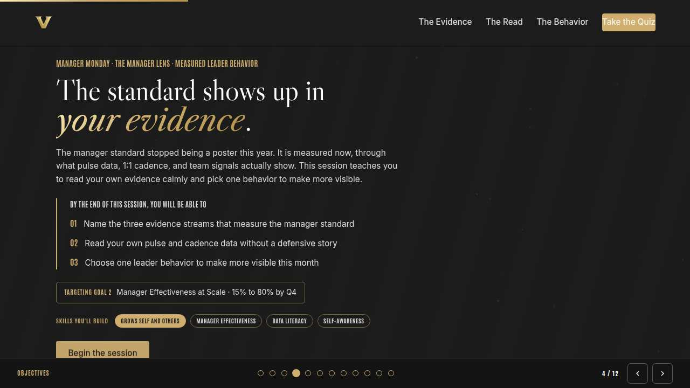
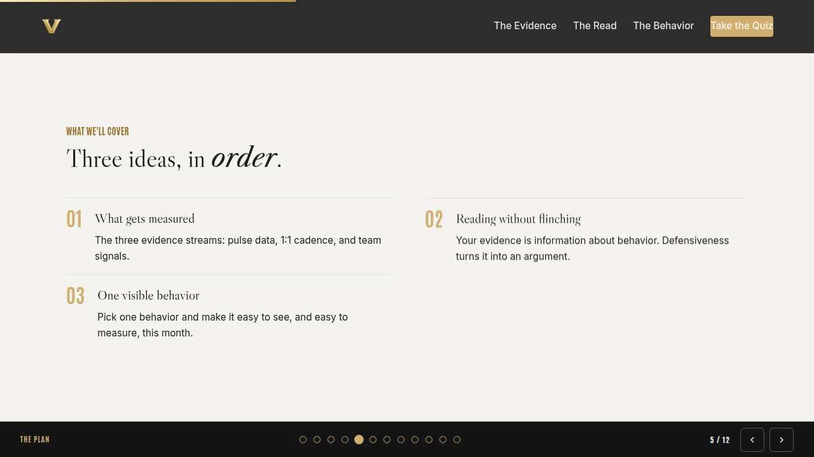
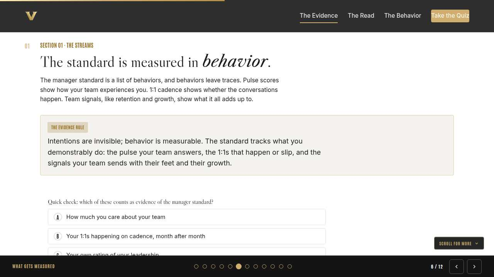
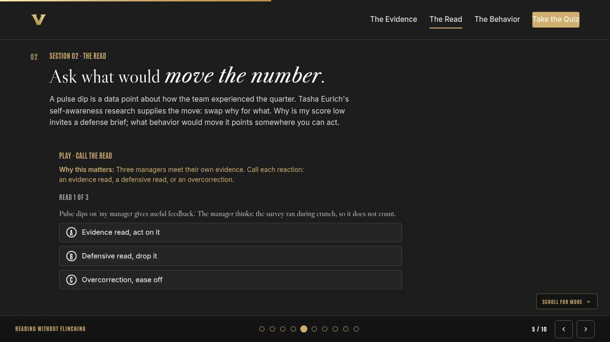
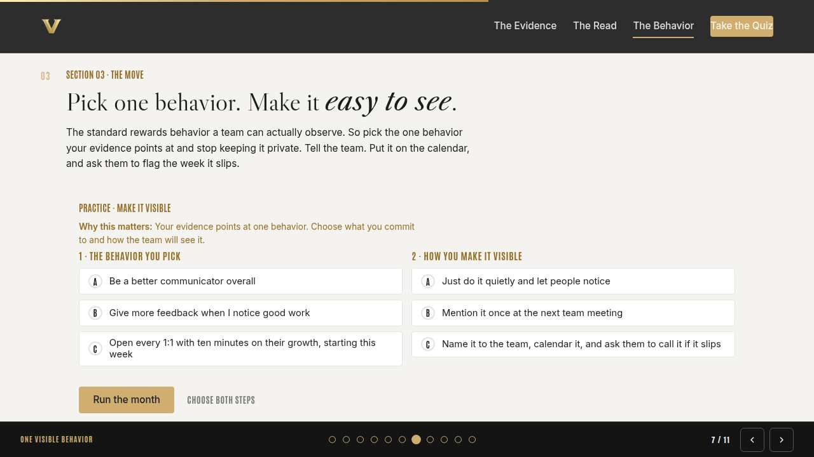
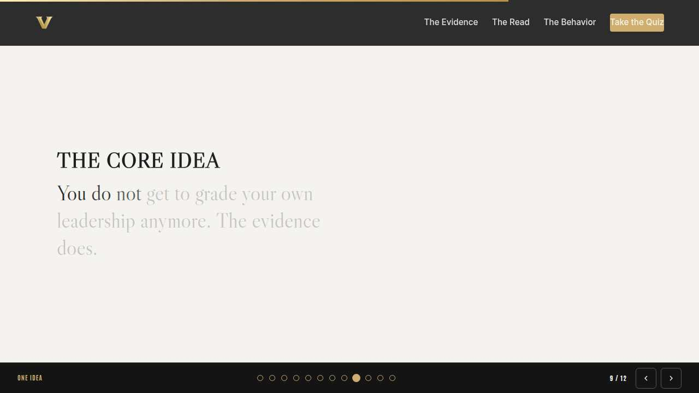
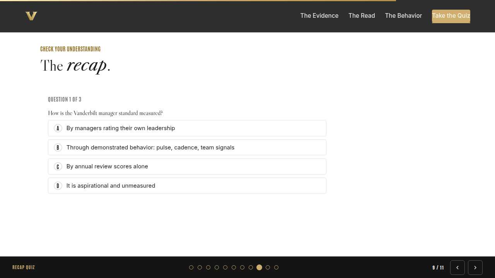
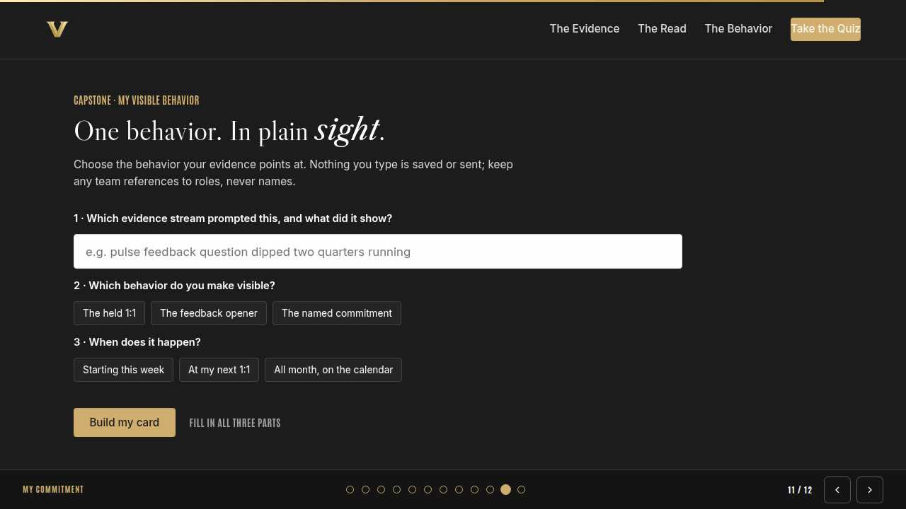
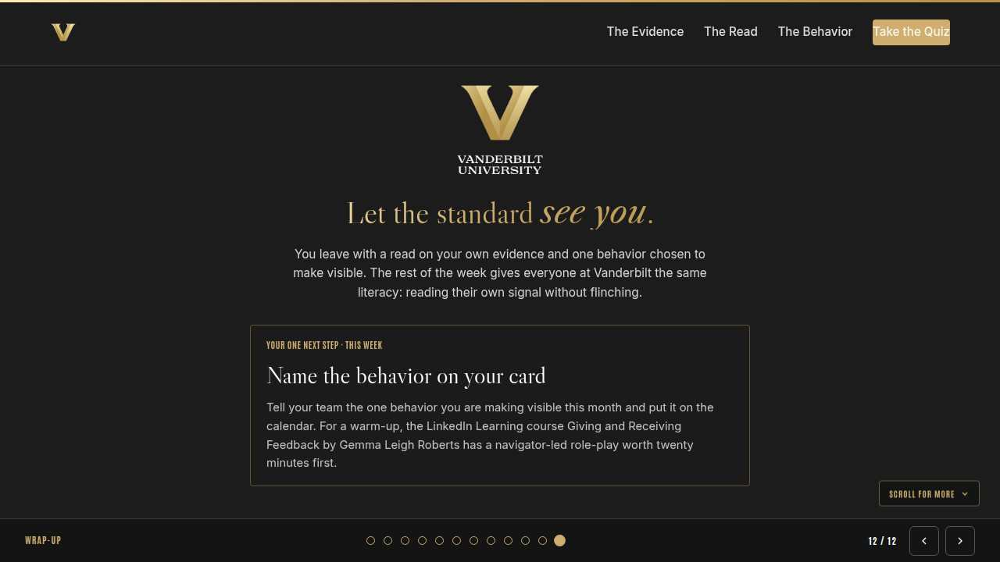

Vanderbilt · Anchor's Edge · ATD facilitator guide · print edition
Your Own Evidence, the facilitator guide

Run of show
| Screen | Full (min) | Core (min) |
|---|---|---|
| Welcome / QR | 2 | 1 |
| Why we're here | 2 | 1 |
| Objectives | 1 | 1 |
| Agenda | 1 | skip |
| What gets measured | 9 | 6 |
| Reading without flinching | 11 | 8 |
| One visible behavior | 9 | 6 |
| The core idea | 1 | skip |
| Recap quiz | 4 | 3 |
| Capstone commitment | 4 | 3 |
| Closing | 1 | 1 |
| Total | 45 | 30 |
The goal this month serves
Goal 2, Manager Effectiveness at Scale.
Audience
Vanderbilt people managers and team leads in the Anchor's Edge weekly rhythm. Works for 6 to 40 on a call; breakouts run in pairs. No prerequisites; May is month eight, when the manager standard becomes visible, and measurable.
Room setup
Virtual, instructor led: camera on, deck link in chat, breakouts of 2 available. Learners follow on their own screens via the welcome-slide link or QR. Nothing typed into the deck is saved or sent.
Materials
- Meeting platform with screen share and breakout rooms; deck link ready to paste in chat
- Facilitator machine with the facilitator edition open; notifications off
- Learners on their own devices with the learner link
- Chat open for share-outs; the capstone copy button pastes there cleanly
A week before
- Run the learner edition start to finish and do every interaction honestly; you will demo at least one live.
- Read this month's theme page on the Anchor's Edge dashboard so the goal tie-in is fluent.
- Send the invite with the learner link and one line on what to bring.
The day before
- Test screen share with the facilitator edition; confirm the notes rail is readable.
- Open the learner link on a second device; the QR must land there.
- Run the section interactions once so you can drive them without reading.
30 minutes before
- Welcome slide up as people join; link pasted in chat.
- Close every other tab; silence the machine.
- Breakout rooms pre-configured in pairs.
When things go sideways
If Screen share or the site fails mid-session: Paste the learner link in chat and narrate from your own browser; every interaction runs on learner devices without the share.
If Breakout rooms are unavailable: Run the breakout prompts as 60-second chat storms: everyone types their answer at once, you read the best three aloud.
If A manager shares a real pulse score and starts defending it to the room: Protect and redirect: 'That number is yours, and this room is for the read: what behavior would move it?' Keep specifics private; the method is the lesson.
If Someone says the measurement is surveillance of managers: Name what is measured: behaviors managers already owe their teams, read in aggregate over time. The standard watches patterns, and any manager can read their own evidence first.
Tough questions, ready answers
Q: What if my pulse scores are bad because of things I can't control, like a reorg?
Context is real, and the standard reads trends, so name the context and still pick a behavior. Teams in hard seasons rate managers on how visible and steady they were, and that part is fully yours.
Q: Doesn't making my behavior visible look like performing for the metric?
Performing a held 1:1 requires holding the 1:1. The standard picks behaviors where the performance and the substance are the same act, which is why visibility is safe to lean into.
Q: Where does the LinkedIn Learning course fit? Is it required?
It is optional and it is good: Giving and Receiving Feedback by Gemma Leigh Roberts, with a navigator-led feedback role-play and a development-plan build. Point managers to it as rehearsal for the conversation where they name their behavior.
Copy-paste templates
Pre-work invite (paste into the calendar invite)
Subject: Monday, 45 minutes on your own evidence. Bring a private guess: which of your numbers, pulse, 1:1 cadence, or team signals, would surprise you most? You will never be asked to share it. Live and interactive; have the session link open on your own screen.
7-day pulse (send one week after)
Subject: Is the behavior visible yet? Three lines, reply whenever: 1) Is the behavior on your card named to your team and on the calendar? 2) What did your evidence show that surprised you? 3) What will you check next month?
After the session
Seven days out, send the pulse: 'Is the behavior on your card named to your team and on the calendar? What did your evidence show that surprised you? What will you check next month?' Count of named, scheduled behaviors is the Level 3 metric for the month.
Welcome / QR Full 2 min · Core 1
Get everyone into the deck on their own screen and set the tone: 45 minutes, live, hands on.
Say
“Welcome to Manager Monday. Scan the code or click the link in chat so this session runs on your screen too. Forty-five minutes, one focus: Evidence of the manager standard: what gets measured.”
Do
- Slide up as people join; link pasted in chat every few minutes.
- State the norm once: type into your own screen, nothing you enter is saved or sent.
Watch for: People lurking without the deck open. The interactions only land if the deck is on their screen.
Transition: “Before the topic, thirty seconds on why Vanderbilt is asking for this hour.”
Why we're here Full 2 min · Core 1
Anchor the session in the Chancellor's charge and name the goal this month serves, inside one minute.
Say
“One sentence from the Chancellor sits over everything we do: Vanderbilt will define the great university of the 21st Century and be it. The great university of the 21st Century needs leadership you can actually see, and measured manager behavior is Exceptional Core Operations made visible. This month serves Goal 2, Manager Effectiveness at Scale.”
Do
- Read the mission line slowly, once; name the goal, once.
- No discussion here; the whole slide is under a minute.
Transition: “Here is what you will be able to do in 45 minutes.”

Objectives Full 1 min · Core 1
Set the contract for the session in under a minute.
Say
“By the end of this session: name the three evidence streams that measure the manager standard; read your own pulse and cadence data without a defensive story; choose one leader behavior to make more visible this month. That is the whole contract.”
Do
- Read the three objectives briskly; do not elaborate yet.
Transition: “Three stops to get there.”

Agenda Full 1 min · Core skip
Show the path so the room can pace itself.
Say
“Three stops: what gets measured, reading without flinching, one visible behavior. Each one has something to play with, so keep the deck open.”
Do
- Point once at each stop; ten seconds each.
Transition: “Stop one.”
Core path: Core: skip the read-through, gesture at the slide in passing.

What gets measured Full 9 min · Core 6
Install the three evidence streams: pulse data, 1:1 cadence, and team signals.
Say
“When this series first introduced the manager standard, it was a promise on a slide. This month it is a measurement, and what it measures is behavior, in three streams your team already generates: how they answer the pulse, whether your 1:1s actually happen, and what retention and growth say over time. Take the pulse stream seriously. It descends from Gallup's engagement research, which keeps finding that the manager moves a team's engagement more than any other factor. Today is about reading your streams like a professional instead of like a defendant.”
Do
- Read the lead once, then walk the concept card and the In the room card together; no quiz in the live room.
- Lead the discussion prompt aloud; take two or three voices, plus a chat vote on the least-checked stream.
- Run the breakout on the least-checked stream, 90 seconds each way.
Ask
“Which of the three streams do you trust least, and why?”
Expect:
- Pulse, because scores feel noisy or unfair
- Team signals, because they arrive slowly
Respond: Fair. Any one stream alone is noisy; the standard reads all three together, which is what makes the picture honest.
Debrief: Behavior leaves traces. The standard reads the traces, and so can you.
Watch for: Managers debating survey methodology. Redirect: the streams are a mirror, and today's work is reading it; fixing the mirror is somebody else's job.
Transition: “Reading the streams is easy on a good quarter. The skill shows up when the evidence stings.”
Core path: Core: skip the breakout; take the least-checked stream as a chat vote only.

Reading without flinching Full 11 min · Core 8
Teach the evidence read: treating your own data as information about behavior, without defensiveness or overcorrection.
Say
“Here is what happens to most of us when our own numbers dip: we become defense attorneys. The survey timing was bad, the team misread the question, that one person is grumpy. Every one of those might be true, and none of them moves the number. Tasha Eurich, who has studied self-awareness in thousands of professionals, found that people who genuinely know themselves ask what instead of why. Why is this happening opens a case for the defense. What would move this number opens a plan. When your data stings, reach for the what.”
Do
- Run Call the read live; everyone plays on their own screen.
- After round one, pause: ask who sympathized with the defensive manager and why.
- Run the breakout on feedback they argued with at first.
Ask
“What makes the overcorrection in round three feel virtuous?”
Expect:
- It looks decisive
- It proves you took the feedback seriously
Respond: Right, and that is the trap. One signal earns one adjustment. Dramatic overhauls are defensiveness wearing a cape.
Debrief: Defensiveness argues with the data; the evidence read asks what would move it, then settles for one behavior.
Watch for: Anyone spiraling on a real score they got. Normalize warmly: every manager in the room has a dip somewhere, and a dip is a prompt, never a verdict.
Transition: “So your evidence points somewhere. Now you choose the behavior it points at.”
Core path: Core: run the trainer, skip the breakout, take one voice on the debrief question.

One visible behavior Full 9 min · Core 6
Convert the evidence read into one named, scheduled, observable behavior for the month.
Say
“The standard cannot measure your intentions, and honestly, neither can your team. So the move this month is almost mechanical: pick one behavior your evidence points at, then make it visible on purpose. Name it to your team. Put it on the calendar. Invite them to catch it slipping. Visibility feels like exposure, and it is actually insurance: a named behavior is one your busiest week cannot quietly delete.”
Do
- Run Make it visible; two minutes to choose both slots and run it.
- Ask one volunteer to read their outcome aloud, weak or strong.
- Point at the pattern: named, scheduled, observable.
Ask
“Why does naming the behavior to your team feel risky?”
Expect:
- What if I slip in front of them
- It sounds like a public promise
Respond: It is a public promise, and that is the design. A team that watches you keep a small promise learns the standard is real.
Debrief: Visible behavior has three parts: a name, a cadence, and witnesses.
Watch for: Managers picking three behaviors. Cut them back to one; the month measures one thing well over three things vaguely.
Transition: “Quick recap, then you build your own card.”
Core path: Core: everyone runs the builder solo; skip the read-aloud.

The core idea Full 1 min · Core skip
Land the one sentence the session exists to install.
Say
“If you keep one sentence from today, this is it. Read it once, out loud: You do not get to grade your own leadership anymore. The evidence does.”
Do
- Pause two beats after reading; the word animation carries it.
Transition: “The recap makes it stick.”
Core path: Core: pass through in stride; the sentence reads itself.

Recap quiz Full 4 min · Core 3
Score the learning while it is fresh; wrong answers are teaching moments, not failures.
Say
“Three questions, on your own screen. Answer honestly; the explanations are where the learning sticks.”
Do
- Give the room 90 seconds to run it individually.
- Ask for a show of results in chat: how many got 3 of 3?
- Read out the explanation for whichever question drew the most misses.
Watch for: Rushing past the why lines. The explanations carry the teaching.
Transition: “Now point it at your real week.”

Capstone commitment Full 4 min · Core 3
Convert the session into one named, dated action per person.
Say
“Now make it real. One behavior your evidence points at, one window to start it. Keep any team references to roles, never names. Build the card, copy it somewhere you will see it, and be ready to name the behavior to your team by Friday. Two minutes, quiet, go.”
Do
- Two quiet minutes; everyone builds their own card.
- Invite two or three volunteers to read their card aloud or paste it in chat.
- Remind: copy the card somewhere you will see it this week.
Watch for: Vague entries. Nudge for a name-able situation and a real date.
Transition: “Last slide.”

Closing Full 1 min · Core 1
End with the next step and where this thread continues.
Say
“You leave knowing how the standard reads you, and with one behavior about to become visible. Tomorrow's Take-Off Tuesday opens the same toolbox for everyone: how the pulse and 360 tooling actually work and how to read your own signal. Thursday's Thrive Thursday goes a layer deeper with self-awareness and closing your blind spots. And if you want practice before you name your behavior, this month's LinkedIn Learning course, Giving and Receiving Feedback with Gemma Leigh Roberts, has a role-play you can run with its navigator in twenty minutes.”
Do
- Point at the next-step card; one sentence.
- Name the rest of the week's rhythm: the other sessions echo this month's theme.
Generated from facilitator/notes.json. The on-screen facilitator edition lives at ./ alongside this guide.